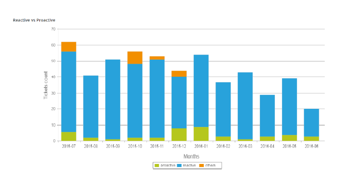
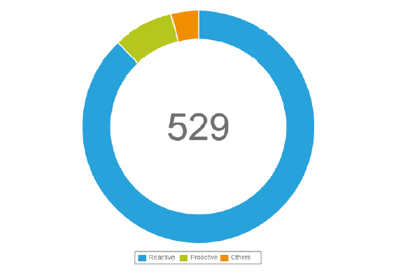
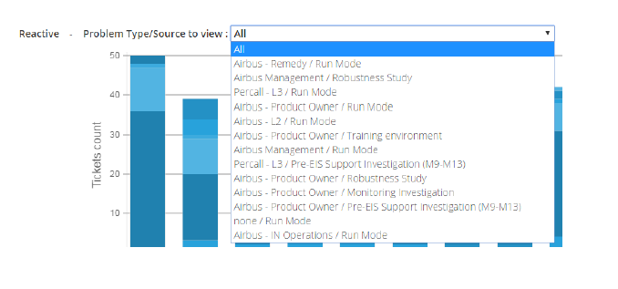
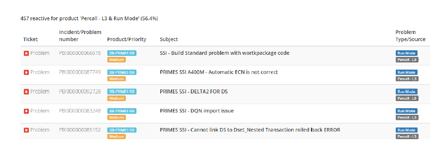
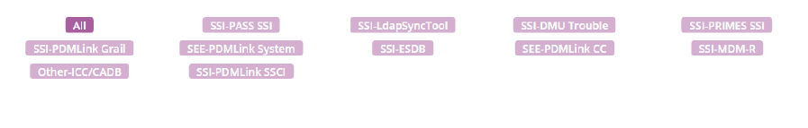

This dashboard intends to categorize created problems at L3, according their origin, to define part of proactivity of IDSC.
A reactive problem is a problem created by the L3 after:
A proactive problem is a problem created by the L3 after:
Basically for any problems without incidents linked to it.
The required chart will be then displayed:
or
For this specific chart, you can then filter for a single origin by using the list:
Then click one of the origins section will display the data details in a table:
For the specific “Time view” chart, you will also have the possibility to filter for a single product in order to refine the analysis:
